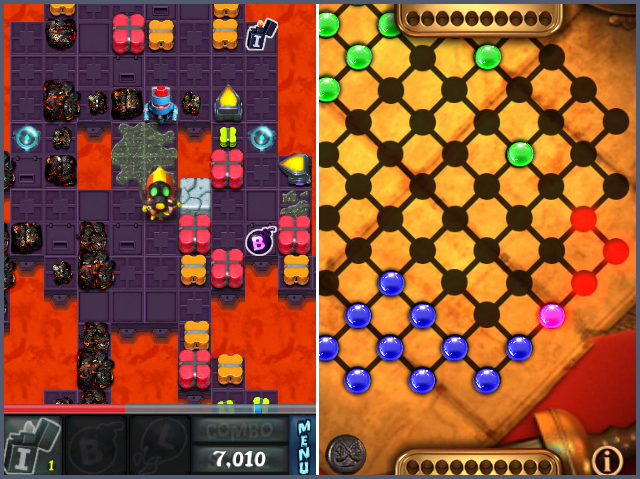
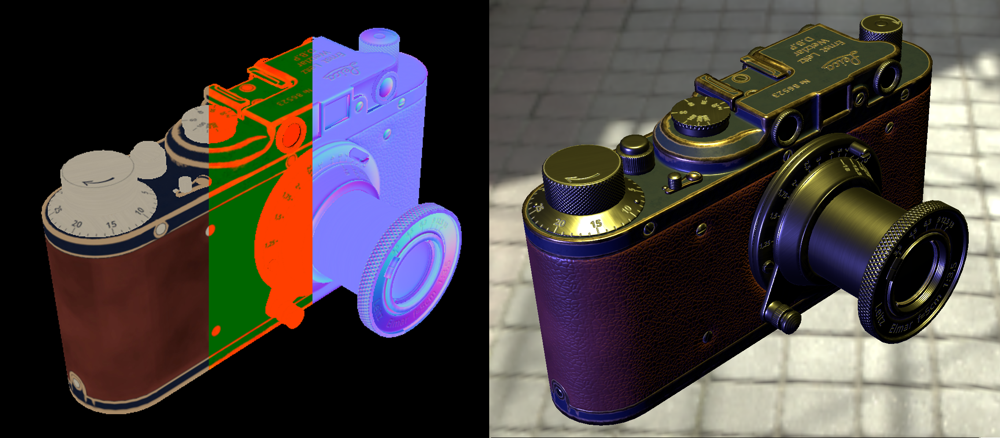
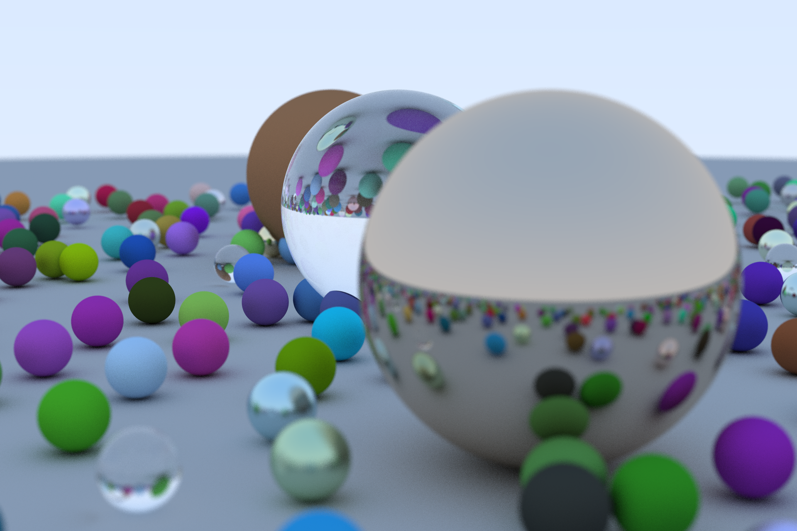
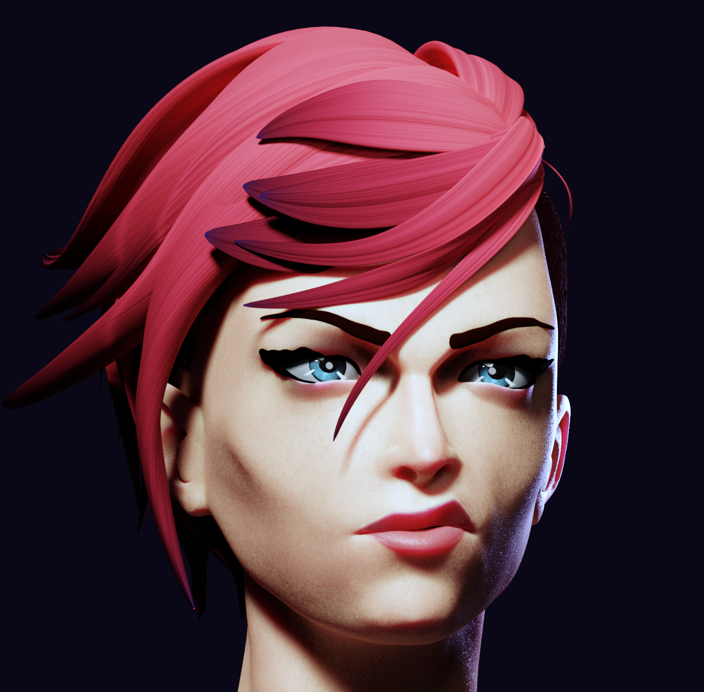
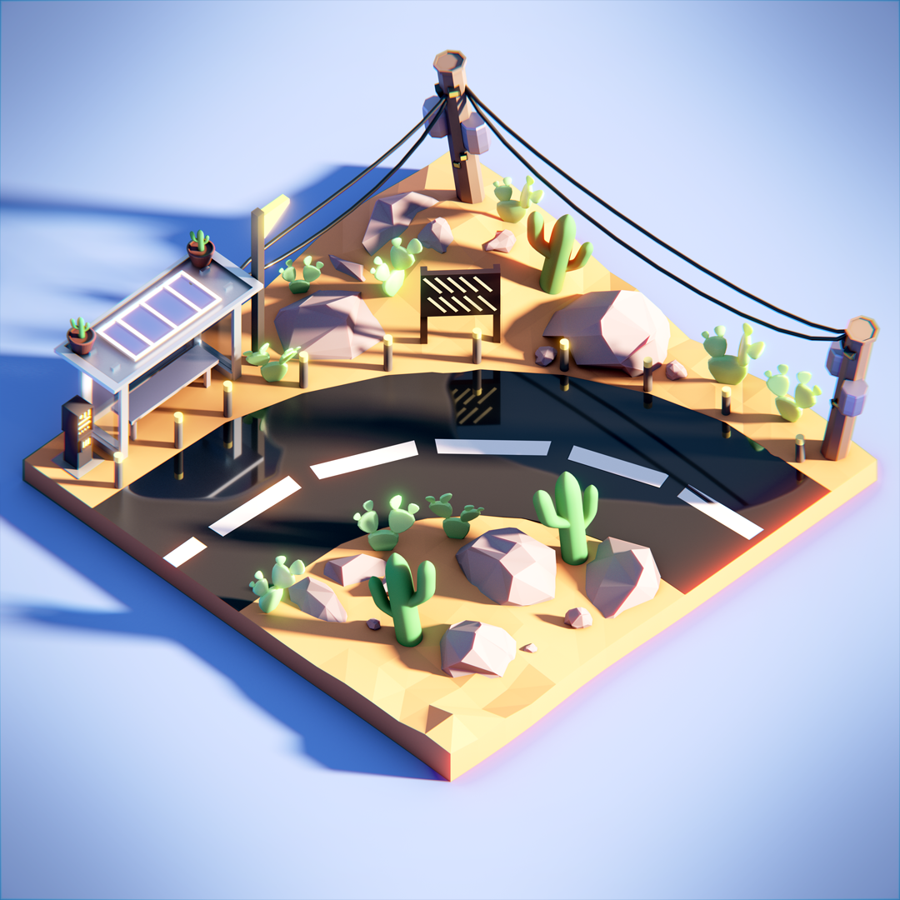
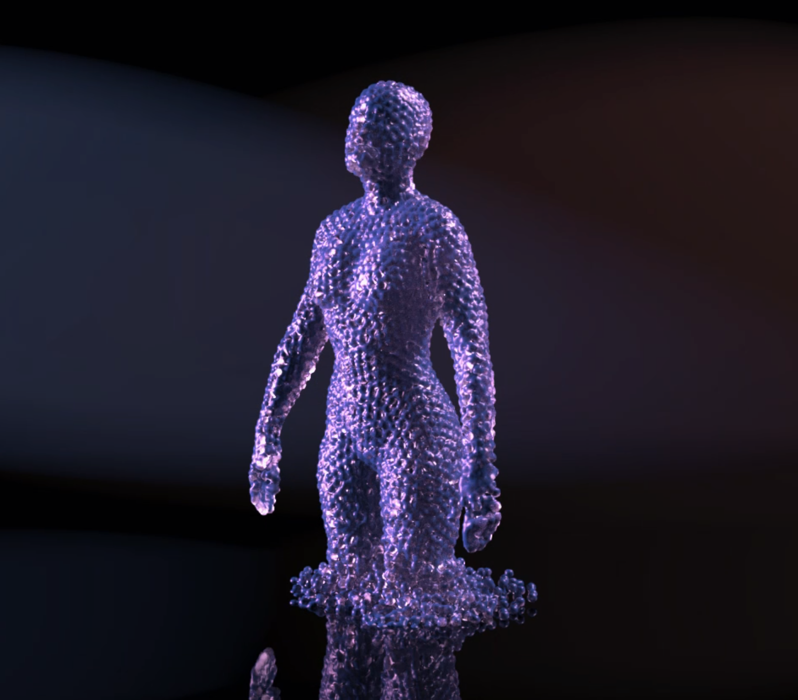
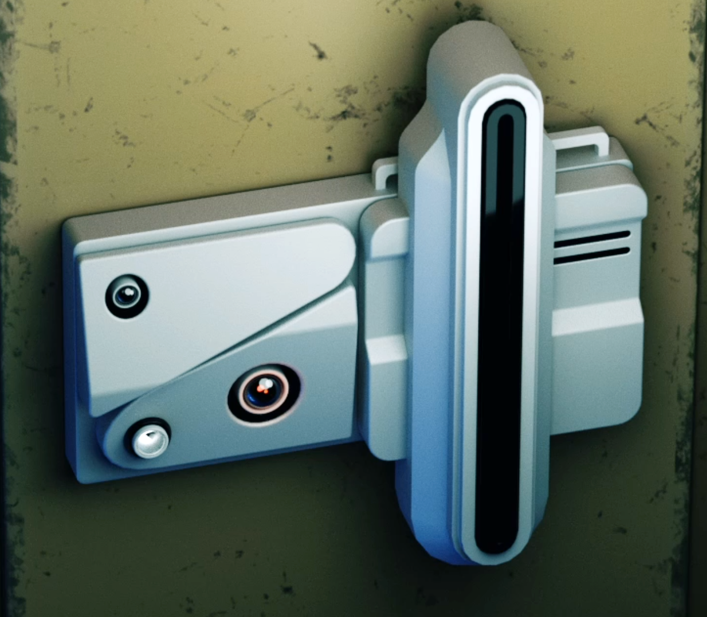
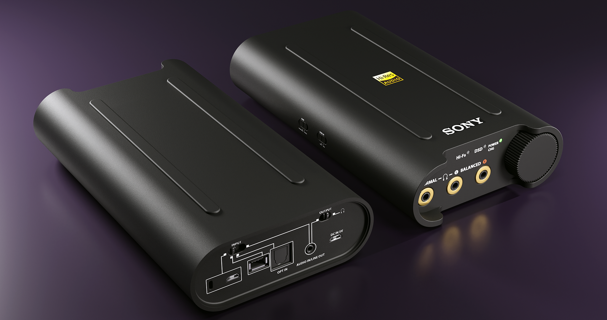

ABOUT ME
My name is Sean Fleming and I'm an engine programmer with almost 20 years in the games industry.
I've shipped several games including DOOM: 2016, RAGE, RTCW: Multiplayer and Alice along with various ports and smaller projects along the way.
Below you can find some personal projects I've been working on, a few animated gifs of tools I've written as well as some things I'm currently learning.
MOLECULE72
Below are some personal projects I've been working on recently.
Click on the images to make them bigger
Lightweaver

This is a VST audio plugin for linking audio triggers to GLSL code.
CHASM

This is a VST audio plugin for rapidly browsing millions of files graphically.
RAGE
Below are some of the tools I wrote while working on RAGE.
Click on the images to make them bigger
Cloud Radiosity Preview

This is a simple IPR renderer I wrote to let the artists light with radiosity real-time.
Cloud Stamping Tool

This is a realtime stamping tool I wrote to let the artists place stamps interactively.
Thumbnail Browser
This is a thumbnail browser I wrote for quickly finding models and other assets.
NERVE SOFTWARE
This is an old multiplatform engine I wrote along with the team at Nerve.
Click on the images to make them bigger
NerveTech

It was fun doing everything from scratch including node system and particle editor.
iPhone Games

We shipped a few small games with the engine.
TECH
Below are some random weekend projects.
Click on the images to make them bigger
Vulkan Demo

I'm working on a PBR Renderer in Vulkan using Sascha Willems's examples.
Learning Rust

I followed Peter Shirley's fantastic Ray Tracing in One Weekend as a way to gently step into the world of Rust.
3D MODELING
I'm not an artist, but I enjoy trying the various tools real artists use to better understand their process. Below are some of my works.
Click on the images to make them bigger
Sculpt of a Head

This head was, very loosely, based on Arcane's Vi.
Low Poly Desert Bus Stop

A low-poly scene I modeled in the style of Polygon Runway.
Glass Simulation

Playing around with Houdini and Redshift.
Scanner Thingy

Modelled the Blade Runner 2049 Scanner.
Sony Device

Practicing hard-surface modeling using the Nitrox tutorials.